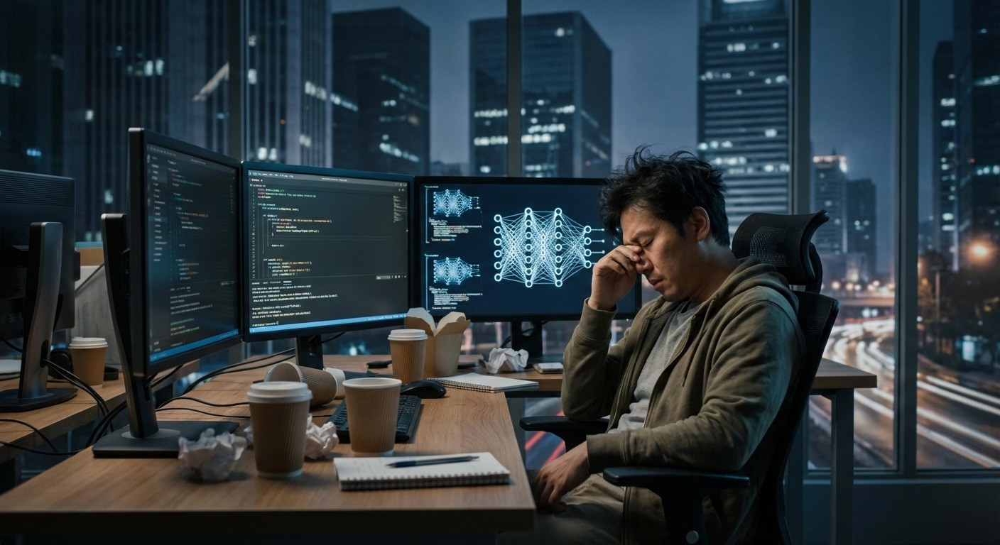
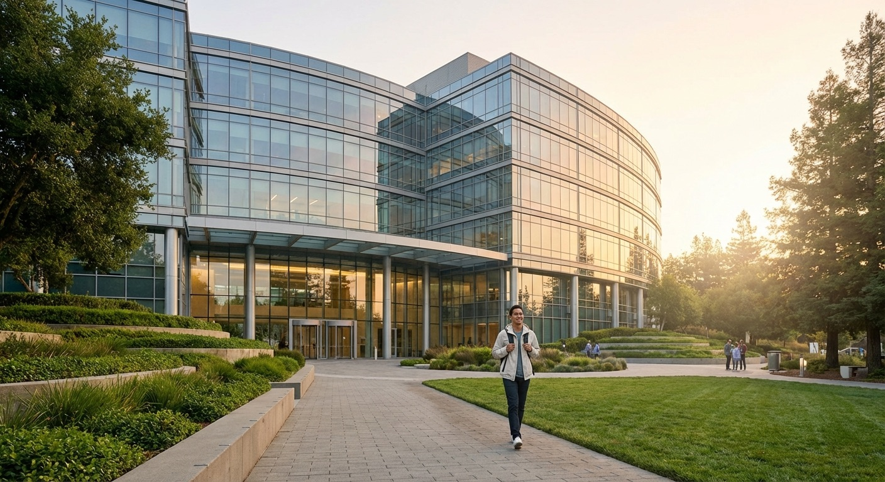
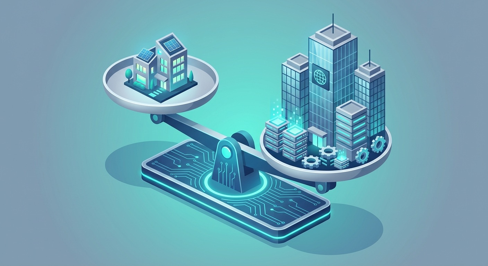

他叫 Yi Tay，曾是谷歌大模型核心骨干——参与了 PaLM、Bard 等多个重磅项目，发表45篇论文，16篇一作，妥妥的AI顶级大牛。
一年半前，他离开谷歌联合创办了 Reka AI，担任首席科学家。
本周，他宣布回归谷歌 DeepMind。

融了1亿多美金，听着很多？但对于训练大模型来说，捉襟见肘。
算力靠抢、硬件像抽彩票、GPU故障率让他大吃一惊。他说：外面的代码库质量跟谷歌比，差距巨大。

创业期间妻子怀孕，没日没夜加班，身心俱疲，胖了15公斤。
公司一度传出要以10亿美元卖身给 Snowflake。
而回到谷歌——钱够、算力够、安安心心做研究。向老板Quoc Le汇报，继续探索大模型前沿。
今年谷歌还以25亿美元打包带走了 Character.AI 核心团队，包括 Transformer 重要作者 Noam Shazeer。
越来越多的AI大牛正在从创业公司回流大厂。新一轮洗牌期，人才向巨头聚拢，已成趋势。